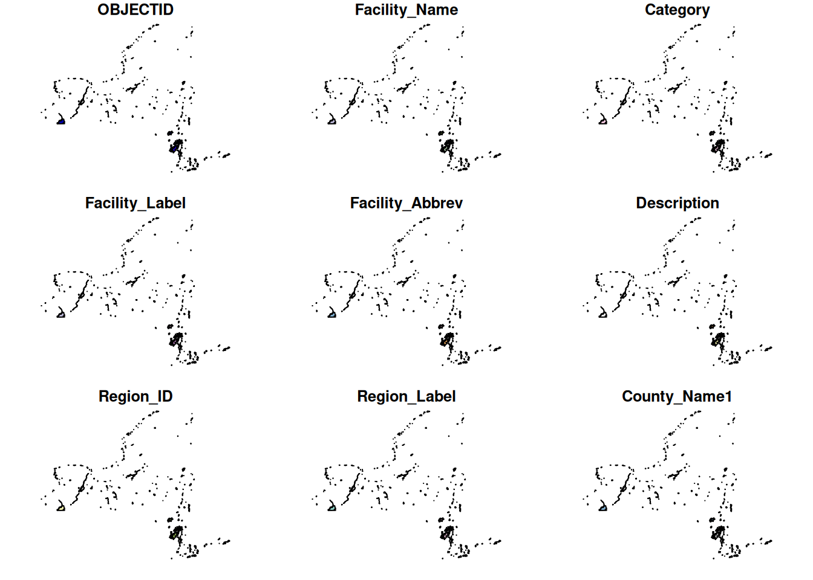
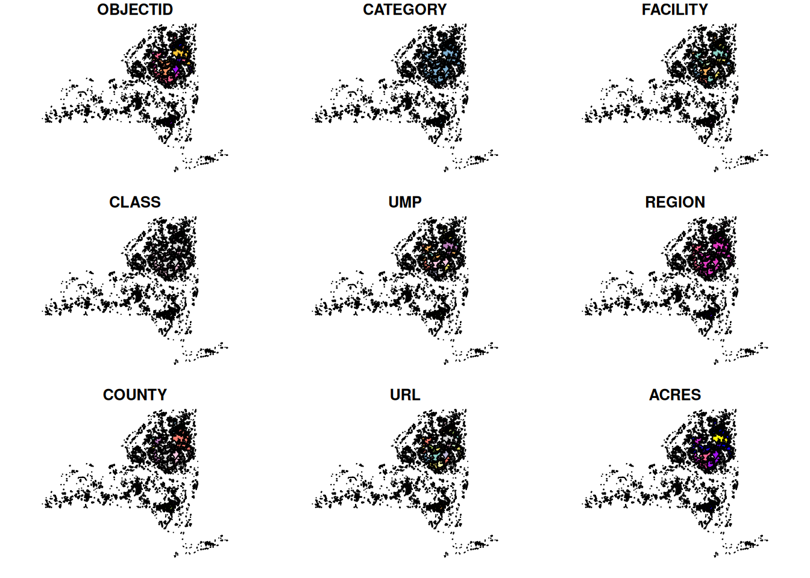

library(tigris)
library(terra)
library(tibble)
library(tidyverse)
library(sf)
library(dplyr)
library(osrm)
library(httr)
library(jsonlite)Upstate NY Parks Project
Analyzing the distribution of population and access to Upstate NY State Parks and state owned environmental lands
Introduction & Reasoning
New York State (NYS) has the largest number of state parks (not area) of any state in the United States. Along with this there are numerous environmental lands owned by the NYS Department of Environmental Conservation (NYS DEC) including State Forests, Wildlife Management Areas and all environmental land in the Adirondack and Catskill parks. Despite New Yorkers across the state paying for this land, there are obvious spatial discrepancies giving easier access to people living in certain areas of the state, allowing them more options for a day trip to hike or partake in other recreational activities.
However, what is not known is the exact degree of access different population centers have to these lands. For example, does Rochester or Buffalo have easier access? Or where does most of the Upstate NY population fall in terms of access? Through this research I plan to answer the following questions:
1: Which large population clusters have the greatest day-access to NYS Parks or NYS DEC lands or both?
2: What is the general range of access across these population clusters? (do the southeast suburbs or the northwest suburbs of Rochester get better access?)
3: Where does most of upstate NY fall on a distribution of population and number of parks and DEC lands within range? (does the vast majority of the state have lesser access then most rural areas or somewhere in the middle?)
Data Links (will be downloaded automatically with code)
Spatial data of NYS Park Owned Lands:
Download shapefile
Link: https://data.gis.ny.gov/datasets/17994e0b601e40ab8d52504971304d36/explore?location=42.772750%2C-75.716874%2C6
Spatial data of NYS DEC Owned Lands:
Download shapefile
Link: https://data.gis.ny.gov/datasets/84b4cce8a8974c31a1c5584540f3aaae/explore?location=45.849978%2C-76.858538%2C7
Population Raster:
Download raster
Link: https://search.earthdata.nasa.gov/search/granules?p=C3540918004-ESDIS&pg[0][v]=f&pg[0][gsk]=-start_date&g=G3553496284-ESDIS&long=3.5942492012779557&zoom=2.290018846932618
Other:
Tigris County Subdivision + US State Shapefiles will be downloaded in code.
Methods:
Part 0: Loading necessary libraries
Part 1a: Creating Population Density Raster within defined Upstate NY Area
I am still figuring out how to automatically download the population data from Earthdata with a package so I disabled the population raster code for now.
#Pop_RasterWorld <- rast("gpw_v4_population_count_rev11_2020_30_sec.tif")
NYS_Counties <- tigris::county_subdivisions(state = "NY", cb = TRUE)Retrieving data for the year 2025United_States <- tigris::states(cb = TRUE)Retrieving data for the year 2025This gets the population raster along with plots of NYS County Subdivisions + US States from Tigris. The latter two shapefiles will be used to crop the raster to our desired upstate region.
NYS_Counties2 <- NYS_Counties |>
filter_out(NAMELSADCO == "Suffolk County") |>
filter_out(NAMELSADCO == "Nassau County") |>
filter_out(NAMELSADCO == "Queens County") |>
filter_out(NAMELSADCO == "Kings County") |>
filter_out(NAMELSADCO == "New York County") |>
filter_out(NAMELSADCO == "Richmond County") |>
filter_out(NAMELSADCO == "Bronx County") |>
filter_out(NAMELSADCO == "Westchester County") |>
filter_out(NAMELSADCO == "Rockland County")Excluding counties that are classified as “Downstate” for this project.
United_States_Keep <- c("NY", "PA", "NJ", "VT", "CT", "MA")
United_States2 <- United_States |> filter(STUSPS %in% United_States_Keep)
# creates united states to clip raster to with just the 6 bordering states.
#view(United_States2)
#Pop_Rasterworld2 <- crop(Pop_RasterWorld, United_States2, mask = TRUE)Cropping the raster to nearby states, a warning message will be received that they do not have the same coordinate system, this is true. This first crop is done to speed up projection to match the raster coordinate system to a common system that is already used by the Tigris files.
#target_crs <- "EPSG:4269"
#Pop_Rasterworld3 <- project(Pop_Rasterworld2, target_crs, method = "bilinear")
#st_crs(Pop_Rasterworld3)
# cropping PopRasterworld2 to Upstate NY
#Pop_Rasterworld4 <- crop(Pop_Rasterworld3, NYS_Counties2, mask = TRUE)Transforms the coordinate system of the raster and crops it to the remaining NYS_counties that were not eliminated. The final line plots the population raster.
#plot(Pop_Rasterworld4)Part 1b: Loading in the NYS shapefiles and transforming coordinate systems
# ==== API CALL =====
Parks_url <- "https://services.arcgis.com/1xFZPtKn1wKC6POA/arcgis/rest/services/NY_State_Park_Properties/FeatureServer/0/query?outFields=*&where=1%3D1&f=geojson"
DEC_url <- "https://services6.arcgis.com/DZHaqZm9cxOD4CWM/arcgis/rest/services/NYS_DEC_Lands/FeatureServer/0/query?outFields=*&where=1%3D1&f=geojson"
NYS_Parks <- st_read(dsn = Parks_url)Reading layer `OGRGeoJSON' from data source
`https://services.arcgis.com/1xFZPtKn1wKC6POA/arcgis/rest/services/NY_State_Park_Properties/FeatureServer/0/query?outFields=*&where=1%3D1&f=geojson'
using driver `GeoJSON'
Simple feature collection with 291 features and 25 fields
Geometry type: MULTIPOLYGON
Dimension: XY
Bounding box: xmin: -79.59648 ymin: 40.53249 xmax: -71.83727 ymax: 45.01301
Geodetic CRS: WGS 84NYS_DEC <- st_read(dsn = DEC_url)Reading layer `OGRGeoJSON' from data source
`https://services6.arcgis.com/DZHaqZm9cxOD4CWM/arcgis/rest/services/NYS_DEC_Lands/FeatureServer/0/query?outFields=*&where=1%3D1&f=geojson'
using driver `GeoJSON'
Simple feature collection with 3238 features and 14 fields
Geometry type: MULTIPOLYGON
Dimension: XY
Bounding box: xmin: -79.73413 ymin: 40.50059 xmax: -72.03408 ymax: 45.00314
Geodetic CRS: WGS 84NYS_Parks2 <- st_transform(NYS_Parks, "EPSG:4269")
NYS_DEC2 <- st_transform(NYS_DEC, "EPSG:4269")Completes the task.
plot(NYS_Parks2)Warning: plotting the first 9 out of 25 attributes; use max.plot = 25 to plot
all
plot(NYS_DEC2)Warning: plotting the first 9 out of 14 attributes; use max.plot = 14 to plot
all
Part 2: Figuring out the number of NYS parks and DEC lands within a specified distance (82.5 miles) of each pixel and applying it to the raster cell.
#Pop_cells <- 1:ncell(Pop_Rasterworld4)
#Pop_coords <- xyFromCell(Pop_Rasterworld4, Pop_cells) |> as.data.frame() |> mutate(ID = Pop_cells)
#str(Pop_coords)
#Pop_coords3 <- st_as_sf(Pop_coords, coords = c("x", "y"), crs = st_crs(target_crs))Code gets the coordinates of the middle of each raster cell, along with an ID number and saves it as a an sf object.
#Pop_coords4 <- vect(Pop_coords3)
#Pop_coords5 <- terra::buffer(Pop_coords4, width = 132770.88)Applies a buffer, the width determines the range away from each point it will look for parks! (in meters)
The current range is 132770.88 meters or 82.5 miles which is the distance you could drive if you drove in a straight line at 55mph in 90 minutes (1.5 hours). Chosen due to the country speed limit being 55mph and averaging out from potential interstate portions (~70mph) and country side parts that might be slower.
This number will very likely be modified to a lower amount (due to terrain and movement constraints) and a function created to make smaller circles for areas of higher population (to simulate traffic or speed constraints).
Part 2a: Figuring out number of NYS Parks within each range…
WARNING: THIS WILL TAKE MULTIPLE MINUTES OR MAY NOT WORK ENTIRELY, THIS IS A LARGE PERFORMANCE.
#NYS_Parks3 <- vect(NYS_Parks2)
#Relate <- relate(Pop_coords5, NYS_Parks3, pairs = TRUE, relation = "intersects", na.rm = FALSE)This code preforms a relate finding all of the pairs (x -> park1, x->park2, etc..) between a pixel and parks in range and outputs the result to a matrix.
#Relate2 <- as.data.frame(Relate)
#Relate3 <- Relate2 |> group_by(id.x) |> summarise(number_of_parks = n_distinct(id.y))Groups the matrix by cell id and condenses each group by finding the number of distinct Y values are in each group (the number of parks tied to each cell).
This gives the number of parks within range of each cell!
#N_NYS_Parks <- bind_cols(Pop_coords3, Relate3)Binding the number of parks within range to the coordinates of each respective cell for rasterization.
#NYS_Raster <- rasterize(N_NYS_Parks3, Pop_Rasterworld4, field = numeric, values = N_NYS_Parks$number_of_parks)
#NYS_Raster2 <- mask(NYS_Raster, Pop_Rasterworld4)Rasterizes the point features into a raster layer using the specifications of the population raster, assigning each point to a pixel.
#Pop_Rasterworld6 <- c(Pop_Rasterworld4, NYS_Raster2)Combines the number of parks raster layer with the population raster layer to make one raster with 2 layers!
This raster is currently broken and I am still trying to find the cause of the circles…
#plot(NYS_Raster2)Part 2b: Figuring out number of NYS DEC lands in range…
To be continued….